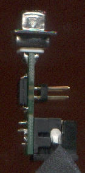
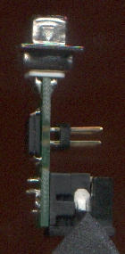

PS/2 mouse adapter PCB designs for Amiga (and Atari ST)
Support Denis Sotchenko's PS2M mouse adapter's PIC
microcontroller firmware
"ps2mhiiri627" is a small printed circuit board design for an Amiga - PS/2
mouse adapter. It uses the PIC16F627A
microcontroller from Microchip. Also any other sufficiently similar PIC
can be used. The firmware comes from the ps2m project (see links for
more information). Cadsoft EAGLE
board and schematic files are on this page for download.
Some of the older revisions
may have hardware bugs, so the new fixed ones should be used.
To use a wheel mouse (scroll) you will need a cable to Amiga's second
joystick port, and a driver utility, WBM (Wheel Bus Mouse.)
Link list
ps2m.sotchenko.ru/index.html
http://www.aminet.net
Aminet files that have the string "ps2m" in their readme
PIC16(L)F627A/628A/648A information
from Microchip
PICs are popular in this kind of use an Atari ST adapter as an
example of many circuits for the same purpose.
Archyx's Amiga-Atari mouse adapter
Problem with right (and middle) mouse button
POTY/POTX inputs are not normal TTL-inputs
A problem: The right mouse button is not recognised by a certain A1200 unit
as pressed down, because the voltage at the D-connector pin 9
remains at 0.3 volts. The input is not a normal TTL-input, but it is
used for a resistance-to-digital converter, "POTY", for example
to be used for an analog joystick or paddles. The middle button uses the other
POT (potentiometer) input.
Maybe the problem causes the pics to die eventually.
Possible fix for right mouse button
Combine three outputs of PIC to drive "POTY".
I used RA6 and RA7 with RB3 to open drain sink current, and
the voltage lowered to 0.16V (on an A500+ mainboard.) Here's
the modified source code,
.hex-file. It also has initialisation code for PIC16LF87's internal
oscillator to make it run at 4 MHz. I hope the modifications don't
cause any side effects. Anyway I tested the adapter with LF87 and it worked,
and so does it with F627A. Note: This doesn't do anything to the middle mouse
button.
The GPL license, and the supplemental
include files macros.i and 16f876.i from ps2m release 1.5.
Compiling picasm and with picasm
I downloaded mingw gnu c environment
for windows and mingw-make, added its bin-directory to windows xp search path
and compiled picasm v1.14. For some
reason the compiled picasm produced "funny" line feed (or
similar) codes, Winpic800 couldn't load the hex file. I loaded the hex file with
willem 0.97ja software and saved it back, and then Winpic800 loaded it fine.
(Picasm assembler seems to be available as a precompiled deb-package in Debian
GNU/Linux)
Configuration word for PIC16F627A/628A/648A
bit 13 FLASH Program Memory Code Protection bit: '1' = protection
off
bit 8 CPD: Data Code Protection bit: '1' = protection off
bit 7 LVP: Low Voltage Programming Enable: '0' = off
bit 6 BOREN: Brown-out Reset Enable bit: '1' = on
bit 5 MCLRE: RA5/MCLR pin function select: '0' = "0 = RA5/MCLR pin
function is digital Input, MCLR internally tied to VDD"
bit 3 /PWRTEN: Power-up Timer Enable bit: '0' = on
bit 2: WDTEN: Watchdog Timer Enable bit: '1' = on
bit 4, 1-0: FOSC2:FOSC0: Oscillator Selection bits = 100 "INTOSC
oscillator: I/O function on RA6/OSC2/CLKOUT pin, I/O function on
RA7/OSC1/CLKIN"
Config word = bin 10000101010100 = hex 2154
Willem eprom progammer might show this as hex 3154 (bit12 also '1')
Power-up Timer (PWRT) provides
a fixed delay of 72 ms (nominal) on power-up for reset.
"MCLR/RA5" option should be configured as RA5-input.
If, however, the MCLR pin is configured as reset, it is needed
to tie the pin to +5V voltage level, with a wire link, or a resistor.
The version of the PIC microcontroller I have mostly used is
the PIC16F627A and '628A. PIC16F627/628/627A/628A/648A can be used,
if you
choose a suitable configuration word for the part you are using.
Please note that the PIC16C84/F84 are
not usable with these PCB:s, because those controllers require external
oscillator components. See the original ps2m.lha on Aminet and/or
microchip datasheets, if you want to use those '84 parts.
V0.8 for Atari ST
Cross-swapping signals for pins 1 and 4 at D9 connector
makes Atari ST mouse from Amiga mouse. This pcb wires the PIC to D9 for
ST use. It was noticed that the mouse pointer moves rather slowly in the
sense that long move on table has to be made in order the pointer reach
other end on the display.
EAGLE PCB CAD source files:
brd
sch
V2.1
This version was made in order to make use of a right-angled D-9F
connector with especially long body. I had about 50 pcs of these
connectors, which are used to build this pcb version of the adapter.
Signals needed for mouse scroll functions are not present except at
the PIC pins, not at any connector. Middle mouse button might work
except maybe on some A1200:s.
It might not fit in A600's mouse connector hole or some Atari-ST
model. The firmware should be the modified version for boosted
current for right mouse button (ps2m-m03). The soic-18 PIC needs to
be programmed before soldering on the
board. The PCB has an option to cris-cros signals to select
between Amiga or Atari-ST operation. It's done by putting
two solder blobs between tiny smd pads on the bottom side.
Document revision A adds default connections for Amiga operation.
board image
schematic image
EAGLE PCB CAD source files:
brd
sch
V0.7
 

board image
schematic image
This is derived from V0.5 boards. The 10-pin header is now
a through hole type instead of SMT-header. The header must
be soldered in a special way: the pins should not stick out
from the lower side surface, because bulges would not allow the PIC
to be soldered. You could put the PCB on a flat surface and press
the pin header as much as it goes, but not more, and the pins are
then not bulging. (Except for the batch of boards I hade made:
The holes are too wide to hold the pins in place by pressure friction.)
V0.7 (January-2008)
EAGLE
brd source
sch source
DIL version with Amiga/ST jumpers
This has the DIL-18 package variant of the PIC, instead of SOIC-18 SMD package.
Choosing between Amiga or ST compatibility is done by placing
the jumpers either vertically or horizontally, thus cross-switching
certain two signals going to the D9F-connector.
Please note, that there may be newer PCB versions, than this V1.0 board,
for the other PCB variants (such as V0.7)
V1.0
Photo
brd
sch
Atari ST version 0.6
Atari STFM version is different from the Amiga version mainly by
the criss-crossing of 2 signal lines
(pins 1 and 4 on D9 connector). D9F-connector is right angle type,
which may not fit to other models of Atari ST than STFM, because
the sides of the connector extend wider than the mouse hole in some
Atari ST models.
Revision-A has design rules "relaxed to 10/10 mils." It also has "MCLR"
pin of the PIC connected to +5V (unlike the initial revision). The PIC is
meant to be programmed before soldering on this PCB.
V0.6Abrd
sch
V0.6 Photo
brd
sch
V0.5b/V0.5a/V0.5/V0.4
These versions are rather similar to each other. V0.5b has different
track routing from the previous, the autorouter was used.
V0.5b(may-2007) EAGLE brd source
sch source
V0.5a(october-2006) EAGLE brd source
sch source
V0.5(march-2006) In this photo.
The V0.4 board is slightly larger than V0.3/V0.2,
so autorouter was able complete its job.
board image
schematic image
EAGLE
brd source
sch source
A small batch of V0.2 boards
Picture of completed V0.2
and adapters with bug fix modifications and a worn out DIL adapter.
VCC/GND bug corrected manually to the boards.
V0.X series is designed to accept the original PS2M firmware directly,
without modification. I programmed the controllers using "Willem Eprom"
programmer and a DIL to SOIC converter. The PICs were temporarily
soldered to the adapter, although only a few of the pins needed to be
soldered to the adapter.
This version 0.2 is the first try, and it has many bugs.
I had a small batch factory made, but discovered the bugs only after
that.
PNG image of the PCB from EAGLE
PNG image of the schematic from EAGLE
There are a number of errors:
VCC and GND switched places on D-9 and IDC-10 connectors. Thats bad.
RB6 of PIC not connected to IDC-10 connector because of unconnected
net due to different signal names on schematic.
For similar reason, VCC not connected on IDC-10 connector.
VCC would have been on the wrong pin anyway.
The name "OSC1/CLKIN" of unused signal is wrong for the pin number
15. See datasheets for correct info.
V0.3 fixed some of the bugs of V0.2, but I haven't actually built
this version. See newest version, if you want to use the board files
to build boards.
board image
schematic image
EAGLE
brd source (the design rules are embedded in
this file)
schematic source